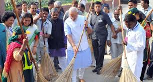
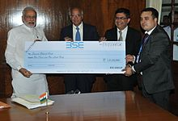
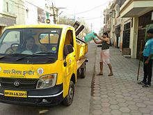
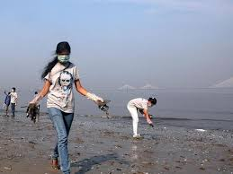

Background
Officially starting as of 1 April 1999, the Government of India restructured the Comprehensive Rural Sanitation Programme and launched the Total Sanitation Campaign (TSC) which was later (on 1 April 2012) renamed Nirmal Bharat Abhiyan (NBA) by Prime Minister Manmohan Singh.Nirmal Bharat Abhiyan was restructured by Cabinet approval on 24 September 2014 as Swachh Bharat Abhiyan.
Swachh Bharat Abhiyan was launched on 2nd October 2014, and aims to eradicate open defecation by 2019, Swachh Bharat Abhiyan is a national campaign, covering 4,041 statutory cities and towns.
Toilets in rural areas
The government is aiming to achieve an Open-Defecation Free (ODF) India by 2 October 2019, the 150th anniversary of the birth of Mahatma Gandhi, by constructing 12 million toilets in rural India, at a projected cost of ₹1.96 lakh crore (US$29 billion). Prime Minister Narendra Modi spoke of the need for toilets in his 2014 Independence Day speech stating:
Has it ever pained us that our mothers and sisters have to defecate in open? Poor womenfolk of the village wait for the night; until darkness descends, they can`t go out to defecate. What bodily torture they must be feeling, how many diseases that act might engender. Can't we just make arrangements for toilets for the dignity of our mothers and sisters?
Modi also spoke of the need for toilets in schools during the 2014 Jammu and Kashmir state elections campaign stating:
When the girl student reaches the age where she realises this lack of female toilets in the school she leaves her education midway. As they leave their education midway they remain uneducated. Our daughters must also get equal chance to quality education. After 60 years of independence there should have been separate toilets for girl students in every school. But for the past 60 years they could not provide separate toilets to girls and as result the female students had to leave their education midway.
— Narendra Modi
As of May 2015, 14 companies including Tata Consulting Services, Mahindra Group and Rotary International have pledged to construct 3,195 new toilets. As of the same month, 71 public sector undertakings in India supported the construction of 86,781 new toilets.
Most of these toilets are a type of pit latrine, mostly the twin pit pour flush type.
Finance
The programme has also received funds and technical support from the World Bank, corporations as part of corporate social responsibility initiatives, and by state governments under the Sarva Shiksha Abhiyan and Rashtriya Madhyamik Shiksha Abhiyan schemes. Swachh Bharat Abhiyan is expected to cost over ₹620 billion (US$9.2 billion). The government provides an incentive of ₹15,000 (US$220) for each toilet constructed by a BPL family.[9] Total fund mobilised under Swachh Bharat Kosh (SBK) as of 31 January 2016 stood at ₹3.69 billion (US$55 million). An amount of ₹90 billion (US$1.3 billion) was allocated for the mission in the 2016 Union budget of India.
Government and the World Bank signed a US$1.5 billion loan agreement on 30 March 2016 for the Swachh Bharat Mission to support India's universal sanitation initiative. The World Bank will also provide a parallel $25 million in technical assistance to build the capacity of select states in implementing community-led behavioural change programmes targeting social norms to help ensure widespread usage of toilets by rural households.
Performance
Between April 2014 and January 2015, 3,183,000 toilets were built. Karnataka led all States in construction of toilets under the programme. As of August 2015, 8 million toilets have been constructed under the program. As of 27 October 2016, 56 districts in India were ODF. In January 2017, Indore city as well as rural areas were announced open defecation free by the central government.
Plans
The Ministry of Railways is planning to have the facility of cleaning on demand, clean bed-rolls from automatic laundries, bio-toilets, dustbins in all non-AC coaches. The Centre may use its Digital India project in conjunction with the Swachh Bharat Abhiyan to have solar-powered trash cans, such as those in many US cities, which send alerts to sanitation crew once they are full.
The Government has appointed PWD with the responsibility to dispose off waste from Government offices.
Other activities
Run
A Swachh Bharat Run was organized at the Rashtrapati Bhavan, the official home of the President of India, located Rajpath, New Delhi, on 2 October 2014. According to a statement from the Rashtrapati Bhavan around 1500 people participated and the event was flagged off by President Pranab Mukherjee. Participants in the run included officers[vague] and their families.

The Times of India published an article on how "Desi companies beat Facebook in 'Swachh' apps race".
Real-time monitoring
The government will be launching a nationwide real-time monitoring system for toilets constructed under the Swachh Bharat Abhiyan. For this the government of India is bringing awareness to the people through advertisements. With this system, the government aims to attain a fully open defecation free India by 2019.
As of 30 November 2016, Total Sanitation Coverage throughout India has risen to 57.56% up from 42.02% in October 2, 2014, the day Swachh Bharat Abhiyan was launched.
Updates from NGOs
With growing interest in the progress of the mission, both private companies[citation needed] as well as government started releasing progress reports. The Swachh Bharat app Tumblr feed provides updates from individual groups, corporations and Twitter users in general about group cleaning events, the status of cleanliness across India, and opinions on the objectives of the Clean India mission. A recent study by the Public Affairs Centre finds that participation of beneficiaries in their toilet construction ensures better usage.